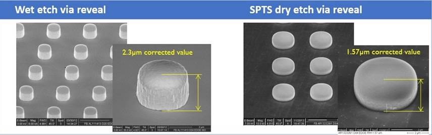

Industry Spotlight - 2015
July 2015
Imec and SPTS Technologies, an Orbotech Company, Collaborate on Critical Processes for 3D IC Wafer Stacking
San Francisco, CA – July 14, 2015 – Nano-electronics research center imec and SPTS Technologies, an Orbotech Company (NASDAQ: ORBK) company and supplier of advanced wafer processing solutions for the global semiconductor and related industries, announced at SEMICON West their collaboration on critical processes for 3D IC wafer stacking. They are jointly developing a highly accurate, short cycle-time dry silicon removal and low temperature passivation solution for through-silicon via-middle processing and thinning of the top-wafer in wafer-to-wafer bonding.
Wafer backside processing is critical for 3D-IC wafer stacking. Today, through-silicon vias (TSV) formed using ‘via-middle’ processing, are typically exposed from the backside of 300mm device wafers by a combination of mechanical grinding and wet or dry etch processes. Dielectric layers are then deposited by plasma enhanced chemical vapour deposition (PECVD) to passivate and mechanically support the exposed TSVs prior to bump/RDL (redistribution) formation, followed by chip-to-wafer or wafer-to-wafer bonding.
To develop an industrially viable 3D-IC technology, the via reveal process requires a shorter cycle-time etching process. Additionally, due to accumulating non-uniformities coming from the TSV frontside etching, bonding and grinding processes, variations of a few microns may occur in residual silicon thickness above the via tips. Therefore, a highly selective process to thin TSV liners and smooth post-etch surfaces is essential to achieve the necessary precision and control within wafer uniformity.
Imec and SPTS are developing a dry etching solution that features in-situ end-point detection. This enables controlled and very precise processing. The process achieves the required TSV height while avoiding lengthy and multiple rework steps thus minimizing the overall cost per wafer. Our first results demonstrate that 1.57µm nail height can be controlled within 300nm range (see image below).
To follow the via reveal etch step, imec and SPTS will also work on PECVD dielectric passivation stacks, with SiO and SiN layers deposited at temperatures below 200°C. Films will be engineered to optimise device electrical performance and stress-managed to minimize warpage of the thin die after debonding,
The collaboration will use SPTS’s Versalis fxP system, a single-wafer cluster platform carrying both etch and dielectric deposition modules to be installed into imec’s 300mm packaging line in Q32015.
“Equipment suppliers are key in developing an integrated solution for the challenges of scaling technology into advanced nodes,” said An Steegen, senior vice president process technology at imec. “The collaboration with SPTS confirms imec’s direction to accelerate innovation for all our partners by closely interacting with suppliers at an early stage of development.”
“Imec plays a critical role in the long term development of the entire semiconductor value chain, from front to back-end,” said Kevin Crofton President of SPTS, and Corporate Vice President at Orbotech. “Their pre-competitive work supports the roadmaps of their core customers. Their remit dictates that they work with vendors and processes that are enabling for imec and their partners, and to be selected is a huge endorsement of our capabilities. We look forward to the results and milestones that we will achieve together.”
